//Calculate standard error
local s1=(1+(350-1)*0.109)/(32*350)
local s0=(1+(350-1)*0.109)/(33*350)
local SE = sqrt(2.456^2*(`s0'+`s1'))
//Calculate power for tau=0.571
dis normal(0.571/`SE'-invnormal(0.975)).80117765In this code call-out we will explore calculations on power, and in particular will focus on considerations of the minimum detectable effect and power curves. This will be based on the study of Alan and Kubilay (2025) who conduct a clustered randomisation, and study a behavioural intervention in schools and its impact on a range of educational, psycho-social, and well-being outcomes.
In particular, the authors document their power calculations in their pre-registration, which can be found on the [AEA Social Science Repository] (https://www.socialscienceregistry.org/trials/9140). As they are considering a clustered randomisation, we need to know various elements to determine power including the sample size in treated and control clusters, the number of clusters themselves, and expectations about the standard deviation of outcomes of interest as well as the intra-cluster correlation of these outcomes.
The key details which the authors use to calculate power are laid out in their pre-analysis plan, and reproduced below for ease of access. Of note, they propose to randomly assign 32 clusters to receive treatment and 33 to act as controls, with 350 observations per cluster. Additionally, the note the assumed standard deviations of of each variable as SD, and the intra-cluster correlation as ICC.
| Variables | Clusters in Treatment | Clusters in Control | Cluster Size | N | Mean | MDE | SD | ICC | Percent Change |
|---|---|---|---|---|---|---|---|---|---|
| Turkish Score | 32 | 33 | 350 | 22750 | 4.294 | 0.571 | 2.456 | 0.109 | 0.133 |
| Math Score | 32 | 33 | 350 | 22750 | 3.914 | 0.535 | 2.372 | 0.103 | 0.137 |
| Bullying in Class | 32 | 33 | 350 | 22750 | 0.470 | 0.047 | 0.499 | 0.016 | 0.100 |
| Bullying in School | 32 | 33 | 350 | 22750 | 0.490 | 0.046 | 0.500 | 0.015 | 0.094 |
| Sensitivity to World Issues | 32 | 33 | 350 | 22750 | 3.413 | 0.095 | 0.881 | 0.021 | 0.028 |
| Locus of Control | 32 | 33 | 350 | 22750 | 3.200 | 0.073 | 0.542 | 0.035 | 0.023 |
| Impulsivity | 32 | 33 | 350 | 22750 | 2.116 | 0.035 | 0.570 | 0.005 | 0.017 |
| Perspective Taking | 32 | 33 | 350 | 22750 | 3.166 | 0.105 | 0.659 | 0.049 | 0.033 |
| Mental Wellbeing | 32 | 33 | 350 | 22750 | 3.040 | 0.049 | 0.524 | 0.015 | 0.016 |
| Belonging | 32 | 33 | 350 | 22750 | 2.858 | 0.068 | 0.660 | 0.019 | 0.024 |
| Autonomy | 32 | 33 | 350 | 22750 | 2.593 | 0.052 | 0.581 | 0.014 | 0.020 |
| In-Degree Friendship | 32 | 33 | 350 | 22750 | 2.767 | 0.373 | 2.613 | 0.039 | 0.135 |
The details above can be used to calculate minimum detectable effect sizes (MDE in the table), as well as more generally used to determine the power to detect specific effects. To see a specific calculation, remember that as laid in (7.14) and related discussion in the book, to calculating power in a clustered randomisation we can apply the following: \[ (1-\beta)=\Phi\left(\frac{\tau}{\sqrt{\sigma^2\left[\frac{1+(N_{c0}-1)\rho}{N_{c0}c_{0}}+\frac{1+(N_{c1}-1)\rho}{N_{c1}c_{1}}\right]}}-\Phi^{-1}(1-\alpha/2)\right), \tag{1}\] where \(N_{c0}\) and \(N_{c1}\) refer to the number of units per control and treated cluster respectively, \(c_0\) and \(c_1\) refer to the number of control and treated clusters, and \(\rho\) refers to the intra-cluster correlation.
Let’s confirm that this all makes sense, by conindering a specific row from the table above. Below we can confirm that based on their assumptions, the authors do indeed have 80% power to detect the reported MDE in row 1 (0.571). We do this below, seeing that indeed, the reported effect of 0.571 can be detected with the stated level of power.
//Calculate standard error
local s1=(1+(350-1)*0.109)/(32*350)
local s0=(1+(350-1)*0.109)/(33*350)
local SE = sqrt(2.456^2*(`s0'+`s1'))
//Calculate power for tau=0.571
dis normal(0.571/`SE'-invnormal(0.975)).80117765It is also easy enough for us to see how we can arrive at this minimum detectable effect directly. In this case, rather than having an effect of interest \(\tau\) in (Equation 1) and wishing to find the power, we wish to find the minimum detectable effect is power is set to 0.8. It is easy enough to see that if we apply an inverse normal transformation to each side of (Equation 1) and re-arrange, we can calculate our MDE (\(\tau\)) as: \[ \tau = \left[\Phi^{-1}\left(1-\beta\right) + \Phi^{-1}\left(1-\alpha/2\right)\right]\times SE, \] where SE is simply the standard error term in the denominator of (Equation 1). We do this below, seeing how we can arrive to the value of 0.571 (approximately) below:
More generally, instead of working with a specific effect to achieve a desired power, we could generate power curves to plot the power to detect an effect if the true effect were indeed some specific value. This in essence maps the formula in (Equation 1) to a series of effects \(\tau\), plotting the resulting power. Below we will generate and plot such a power curve. We do so for effects ranging from 0 to 0.7:
clear
set obs 51
gen effect = (_n-1)/50
gen power = normal(effect/`SE'-invnormal(0.975))
// Plot power versus effect
twoway connected power effect, ytitle("Power") ///
xtitle("True effect ({&tau})") ylabel(, format("%03.1f")) ///
xlabel(, format("%03.1f"))Number of observations (_N) was 0, now 51.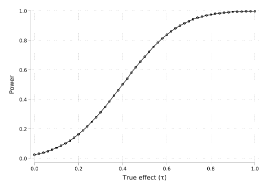
Upon doing this, we see the standard features of a power curve with an ‘upside-down’ normal shape, and see that this reaches the commonly employed 80% power threshold at the value indicated above (0.571), approximately reaching 100% power at effect sizes of 1.
Of course, the power in this setting depends upon a number of quantities, and not the true effect. We can see this by considering the power curve corresponding to each outcome laid out in Table Table 1. Below we loop through each of the outcomes from the table taking their assumed standard deviation (SDs) and intra-cluster correlation (ICC), calculating the resulting standard error, and then calculating the power curve at the values for effect defined above. Note that while much of this code probably feels standard with a foreach loop, in Stata to loop through two lists simultaneously we use the tokenize commands, which allows us to store elements in numerical positions (1',2’, and so forth), and the macro shift command in each loop, which moves the required ICC into a quantity called `1’ in each loop.
local SDs 2.456 2.372 0.499 0.500 0.881 0.542 0.570 0.659 0.524 0.660 0.581 2.613
local ICC 0.109 0.103 0.016 0.015 0.021 0.035 0.005 0.049 0.015 0.019 0.014 0.033
tokenize `ICC'
local j=0
foreach sd of local SDs {
local n1=(1+(350-1)*`1')/(32*350)
local n0=(1+(350-1)*`1')/(33*350)
local SE = sqrt(`sd'^2*(`n0'+`n1'))
local ++j
gen power_y`j' = normal(effect/`SE'-invnormal(0.975))
macro shift
}We can now plot these power curves for each of the outcomes, where we of course see that the power to detect specific effects varies considerably by outcomes, as laid out in Table Table 1.
#delimit ;
twoway connected power_y1 effect if effect<0.6
|| connected power_y2 effect if effect<0.6
|| connected power_y3 effect if effect<0.6
|| connected power_y4 effect if effect<0.6
|| connected power_y5 effect if effect<0.6
|| connected power_y6 effect if effect<0.6
|| connected power_y7 effect if effect<0.6
|| connected power_y8 effect if effect<0.6
|| connected power_y9 effect if effect<0.6
|| connected power_y10 effect if effect<0.6
|| connected power_y11 effect if effect<0.6
|| connected power_y12 effect if effect<0.6,
ytitle("Power")
xtitle("True effect ({&tau})") ylabel(, format("%03.1f"))
xlabel(, format("%03.1f"))
legend(order(1 "Turkish score" 2 "Math score"
3 "Bullying (class)" 4 "Bullying (school)"
5 "Sensitivity" 6 "Locus of control"
7 "Impulsivity" 8 "Perspective"
9 "Wellbeing" 10 "Belonging"
11 "Autonomy" 12 "Friendship"))
;
#delimit cr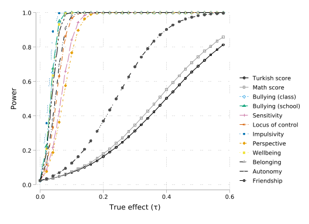
The above assumes clustered randomisation. Of course if we were working with unit-level randomisation we could proceed similarly, but in this case our standard error calculation is far simpler, and we would be very likely be more powered given the larger effective sample size.
local SEind = sqrt(2.456^2/22750)
gen powerNoCluster = normal(effect/`SEind'-invnormal(0.975))
// Plot power versus effect
twoway connected powerNoCluster effect, ytitle("Power") ///
xtitle("True effect ({&tau})") ylabel(, format("%03.1f")) ///
xlabel(, format("%03.1f"))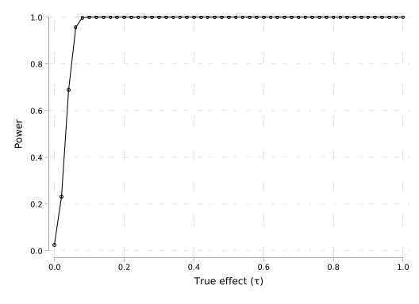
Finally note that if instead of asking what the MDE is for a given case we would rather determine the minimum required sample size to determine an effect, we can do so by applying (7.12) in the book. Let’s see this for a power of 0.8:
dis 4*(invnormal(0.8)+invnormal(0.975))^2/(0.4^2/2.456^2)
dis 4*(invnormal(0.8)+invnormal(0.975))^2/(0.3^2/2.456^2)
dis 4*(invnormal(0.8)+invnormal(0.975))^2/(0.2^2/2.456^2)
dis 4*(invnormal(0.8)+invnormal(0.975))^2/(0.1^2/2.456^2)1183.5985
2104.1751
4734.394
18937.576Let’s confirm that if we use those sample sizes we do indeed see such minimum detectable effect sizes.
local SE_04 = sqrt(2.456^2/1184)
local SE_03 = sqrt(2.456^2/2104)
local SE_02 = sqrt(2.456^2/4734)
local SE_01 = sqrt(2.456^2/18938)
gen power_04 = normal(effect/2*`SE_04'-invnormal(0.975))
gen power_03 = normal(effect/2*`SE_03'-invnormal(0.975))
gen power_02 = normal(effect/2*`SE_02'-invnormal(0.975))
gen power_01 = normal(effect/2*`SE_01'-invnormal(0.975))
// Plot power versus effect
twoway connected power_04 effect if effect<0.6, ms(Oh) ///
|| connected power_03 effect if effect<0.6, ms(Sh) ///
|| connected power_02 effect if effect<0.6, ms(Dh) ///
|| connected power_01 effect if effect<0.6, ms(t) ///
ytitle("Power") ///
xtitle("True effect ({&tau})") ylabel(, format("%03.1f")) ///
xlabel(0(0.1)0.6, format("%03.1f")) ///
legend(order(1 "N=592" 2 "N=1,052" 3 "N=2,367" 4 "N=9,469"))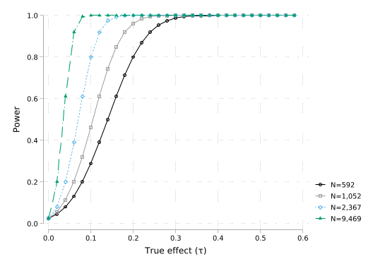
While there are various other calculations we can make (or indeed, we could generate power curves by simulation in cases where settings are more complex), above we see that it is relatively straightforward to both generate power curves as well as arrive at minimum detectable effect sizes or minimum sample sizes required to detect effects. This is a key step in experimental design where we will wish to ensure that our study is actually sufficiently powerful to detect any real effects that may exist with sufficient precision.
We are interested in examining a number of corrections for multiple hypothesis tests which provide control of the family-wise error rate of tests. To do so, we will use data from Charness and Gneezy (2009). In their paper, they examine whether a group of individuals who receive an incentive to exercise are observed to have greater improvements in a number of markers of health compared with individuals who are not incentivised to go to the gym. Below we load the data from their “Experiment 2”, which has be most complete set of health and biometric measures, make a small number of changes to correct for a missing value, and remove a variable which we will regenerate ourselves below:
use data/Charness_Gneezy_2009, clear
replace bmi2 = . if bmi2==0
drop bmi_diff
//Keep just high treated (eight==1) and controls (eight==0)
drop if one==1(1 real change made, 1 to missing)
(57 observations deleted)In the last step, we have dropped all observations flagged as having one==1. Charness and Gneezy (2009) actually consider two treatments: one in which individuals are given one reminder and one in which they are given eight reminders, as well as a control condition. In the interests of simplicity here we consider only those treated more intensively with eight reminders (eight==1), though if we wished, we could reproduce the entire analysis below by comparing those treated with one reminder to the control condition.
Here we will consider the tests documented in Table XX of Charness and Gneezy (2009) in which changes in biometric measures of treated individuals (eight==1) are compared with measures among untreated individuals (eight==0). Below we will define a local which contains each of the variables studied, and then we generate an outcome which captures the change in these measures over time for each individual. This is based on differences between the third measure taken (a follow-up wave), and a baseline measure.
We will seek to calculate 4 p-values for each test. Specifically, we will calculate p-values not considering the fact that we are conducting multiple tests, and we will generate p-values correcting for multiple testing by applying the procedures of Bonferroni, Holm, and Romano and Wolf. We will start by simply generating an empty matrix which we will fill out with each procedure below:
matrix pvalues = J(7,4,.)
matrix colnames pvalues = uncorrected Bonferroni Holm Romano-Wolf
matrix list pvalues
pvalues[7,4]
uncorrected Bonferroni Holm Romano-Wolf
r1 . . . .
r2 . . . .
r3 . . . .
r4 . . . .
r5 . . . .
r6 . . . .
r7 . . . .Let’s start by simply runnnig the regression which essentially replicates the results of Charness and Gneezy (2009). Specifically, we will regress each differenced measure on treatment receipt, which, given random assignment, should allow us to calculate an ATT. In practice, Charness and Gneezy (2009) document these differences in a more extended manner in their Table XX, but if we compare the below to this Table, we can see that estimated effects line up very well.
Linear regression Number of obs = 99
F(1, 97) = 22.17
Prob > F = 0.0000
R-squared = 0.2157
Root MSE = 2.0601
------------------------------------------------------------------------------
| Robust
bodyfat_diff | Coefficient std. err. t P>|t| [95% conf. interval]
-------------+----------------------------------------------------------------
eight | 2.18859 .4647911 4.71 0.000 1.266108 3.111071
_cons | -1.410256 .4147037 -3.40 0.001 -2.233329 -.5871843
------------------------------------------------------------------------------
Linear regression Number of obs = 99
F(1, 97) = 3.53
Prob > F = 0.0633
R-squared = 0.0342
Root MSE = 13.506
------------------------------------------------------------------------------
| Robust
pulse_diff | Coefficient std. err. t P>|t| [95% conf. interval]
-------------+----------------------------------------------------------------
eight | 5.147436 2.740096 1.88 0.063 -.2908967 10.58577
_cons | -3.897436 2.077106 -1.88 0.064 -8.019917 .2250454
------------------------------------------------------------------------------
Linear regression Number of obs = 99
F(1, 97) = 2.31
Prob > F = 0.1317
R-squared = 0.0286
Root MSE = 2.6212
------------------------------------------------------------------------------
| Robust
weight_diff | Coefficient std. err. t P>|t| [95% conf. interval]
-------------+----------------------------------------------------------------
eight | .9117949 .5997573 1.52 0.132 -.2785573 2.102147
_cons | -.5717949 .5437863 -1.05 0.296 -1.65106 .5074704
------------------------------------------------------------------------------
Linear regression Number of obs = 99
F(1, 97) = 2.81
Prob > F = 0.0971
R-squared = 0.0342
Root MSE = .93178
------------------------------------------------------------------------------
| Robust
bmi_diff | Coefficient std. err. t P>|t| [95% conf. interval]
-------------+----------------------------------------------------------------
eight | .3549698 .2118856 1.68 0.097 -.0655644 .775504
_cons | -.2313727 .1907814 -1.21 0.228 -.610021 .1472757
------------------------------------------------------------------------------
Linear regression Number of obs = 99
F(1, 97) = 3.51
Prob > F = 0.0641
R-squared = 0.0384
Root MSE = 1.9673
------------------------------------------------------------------------------
| Robust
waist_diff | Coefficient std. err. t P>|t| [95% conf. interval]
-------------+----------------------------------------------------------------
eight | .7967949 .4254362 1.87 0.064 -.0475782 1.641168
_cons | -.0717949 .359328 -0.20 0.842 -.7849615 .6413718
------------------------------------------------------------------------------
Linear regression Number of obs = 99
F(1, 97) = 1.73
Prob > F = 0.1912
R-squared = 0.0151
Root MSE = 13.732
------------------------------------------------------------------------------
| Robust
sbp_diff | Coefficient std. err. t P>|t| [95% conf. interval]
-------------+----------------------------------------------------------------
eight | 3.447436 2.619019 1.32 0.191 -1.750592 8.645464
_cons | -5.230769 1.702374 -3.07 0.003 -8.609509 -1.852029
------------------------------------------------------------------------------
Linear regression Number of obs = 99
F(1, 97) = 0.03
Prob > F = 0.8732
R-squared = 0.0002
Root MSE = 9.334
------------------------------------------------------------------------------
| Robust
dbp_diff | Coefficient std. err. t P>|t| [95% conf. interval]
-------------+----------------------------------------------------------------
eight | .2884615 1.802804 0.16 0.873 -3.289606 3.866529
_cons | -2.871795 1.216209 -2.36 0.020 -5.285633 -.4579563
------------------------------------------------------------------------------Because in certain multiple-hypothesis correction procedures below we will wish to work from the most to least significant hypothesis, below we we-order our variable list in terms of their statistical significance, ie in ordered from lowest p-value to highest.
Now, let’s actually start to examine p-values corresponding to each test. Below we will consider the most simple case where no correction is implemented at all. Below, we simply iterate through variables, running the regression with each outcome as a dependent variable, and saving the resulting p-value in the pvalues matrix. You may note that by setting a local j which we increase in each loop, we can loop through both the variables, as well as maintain a counter to save resulting p-values in the matrix of interest.
local j = 1
foreach var in `vars' {
qui reg `var'_diff eight, robust
// Save p-value
matrix results = r(table)
local pval_`var' = results[4,1]
//Store p-vaule in matrix
matrix pvalues[`j',1]=`pval_`var''
// iterate for storing
local ++j
}
matrix list pvalues
pvalues[7,4]
uncorrected Bonferroni Holm Romano-Wolf
bodyfat 8.300e-06 . . .
pulse .06330761 . . .
waist .06409514 . . .
bmi .09709829 . . .
weight .13169541 . . .
sbp .19117267 . . .
dbp .87320819 . . .Here we see that we have simply filled in the first column of the matrix, observing an ascending set of values corresponding to each outcome.
Let’s now implement the Bonferroni correction. As laid out in Section x.7.x.x of the book, this is a relatively simple procedure in which we simply multiply all p-values by the total number of tests (the logic of this is discussed in the chapter itself). We do this below, noting just one specific point of care, which is that we want to ensure that p-values are capped at 1, and so we use the min() function below.
foreach num of numlist 1(1)7 {
matrix pvalues[`num',2]=min(pvalues[`num',1]*7,1)
local current = pvalues[`num',2]
}
matrix list pvalues
pvalues[7,4]
uncorrected Bonferroni Holm Romano-Wolf
bodyfat 8.300e-06 .0000581 . .
pulse .06330761 .44315327 . .
waist .06409514 .44866598 . .
bmi .09709829 .679688 . .
weight .13169541 .92186784 . .
sbp .19117267 1 . .
dbp .87320819 1 . .Here we see that–as expected–our Bonferroni p-values simply inflate all baseline p-values constantly, though suggest that even with this most demanding criteria, impacts of treatment on bodyfat are still statistically significant.
As we saw in the book, we can gain power while still maintaining the familywise error rate by following step-wise techniques. A first of these is Holm’s correction (see section 7.x.x). We implement this below, where the key point to note is that here instead of multiplying all p-values by 7, we mutliply the first (lowest) p-valuy by 7, then the second lowest by 6, and so on and so forth until the final p-value is simply returned as is.
Perhaps the only important thing to note in this procedure is that now we must ensure that we enforce monotonicity. Monotonicity simply implies that if we have some original p-value ordering from lowest to highest, our resulting corrected p-values should still maintain this ordering. For this reason, if some variable with a higher uncorrected p-value returns a lower corrected p-value, we simply replace the corrected p-value with the value of the p-value observed in the preceding variable. This is implemented below on the lines following the comment //enforce monotonocity.
local prev = 0
foreach num of numlist 1(1)7 {
local m = 8-`num'
matrix pvalues[`num',3]=min(pvalues[`num',1]*`m',1)
//enforce monotonocity
local current = pvalues[`num',3]
if `current'<`prev' {
local current = `prev'
matrix pvalues[`num',3] = `prev'
}
//Save current p-value to check monotonocity next round
local prev = `current'
}
matrix list pvalues
pvalues[7,4]
uncorrected Bonferroni Holm Romano-Wolf
bodyfat 8.300e-06 .0000581 .0000581 .
pulse .06330761 .44315327 .37984566 .
waist .06409514 .44866598 .37984566 .
bmi .09709829 .679688 .38839314 .
weight .13169541 .92186784 .39508622 .
sbp .19117267 1 .39508622 .
dbp .87320819 1 .87320819 .Here we see the additional power of Holm’s correction over Bonferroni. With the exception of the lowest p-value, p-values are all strictly lower than their counterpart in Bonferroni. We also observe a second regularity which is that the lowest p-value corresponds to that of the Bonferroni procedure, while the highest corresponds to the uncorrected p-value.
While Holm offers benefits over Bonferroni in terms of power, this is still based on the “worst-case scenario” that all test statistics are entirely independent. As laid out in Romano and Wolf, We can improve on this using bootstrap-based procedures which directly estimate the dependence among tests. A full description of this test and its logic can be found in Section 7.x.x of the book.
Here we will implement this procedure “by hand”. To do so, we must estimate many bootstrap replicates of each model, and in each case save the resulting test-statistic of each test once the null hypothesis (in this case of a 0 effect) has been imposed. We will begin this procedure by setting up a new frame with a large number of observations to store the test statistic from each bootstrap replicate, and in this frame we will generate a variable to store the statistic corresponding to each variable:
local B=5000
frame create bstraps
frame bstraps: set obs `B'
frame bstraps {
qui gen bodyfat = .
qui gen pulse = .
qui gen waist = .
qui gen bmi = .
qui gen weight = .
qui gen sbp = .
qui gen dbp = .
}Number of observations (_N) was 0, now 5,000.Now, before we actually go about implementing the bootstrap procedure, we will just re-estimate each of our true regressions, saving the estimated point estimate and t-statistic for use below.
Now, with this in hand, we will do the bootstrap procedure itself. Specifically, we will run a series of B resamples, and in each loop we will calculate the t-statistic where we impose the null hypothesis of a zero effect. This is calculated (in each bootstrap replicate \(b\)), as: \[ t = \frac{\widehat\tau^{*b}-\widehat\tau}{\widehat\sigma^{*b}}, \] where \(\widehat\tau^{*b}\) and \(\widehat\sigma^{*b}\) refer to the bootstrap estimate and standard error respectively, and \(\widehat\tau\) the original estimate. The idea of this is that on average this quantity will be centred around 0 across all bootstraps, but it will correctly capture the variation inherent in our data.
We do this below, iterating through each our B boostrap replicates, and within each replicate, estimate each of our outcomes and the resulting set of t-statistics. We take the absolute value of these as below we will be interested in considering whether our original t-statistic is extreme (either high or low) compared to our bootstrap t-statistics, and this can easily be done by just taking absolute values of each, and comparing the absolute values. We then store each t-statistic in our data frame called bstraps which we will return to use below.
forvalues b=1/`B' {
quietly {
// Save original data, and then take a bootstrap resample
preserve
bsample
foreach var in `vars' {
reg `var'_diff eight, robust
//Estimate t-statistic where the null of a zero effect has been imposed
local t = abs((_b[eight]-`beta_`var'')/_se[eight])
frame bstraps: replace `var' = `t' in `b'
}
// Return to original data
restore
}
}To see what we have done so far, let’s change into the frame where we have our bootstrap replicates, and examine the distribution of these for one variable:
(bin=36, start=.00020185, width=.12407769)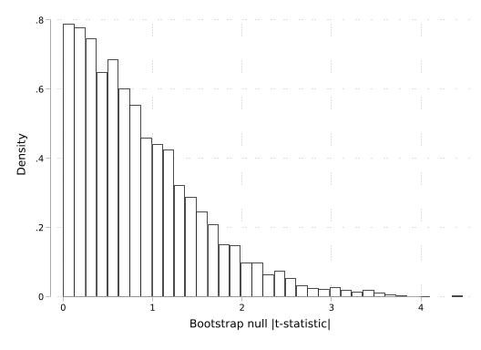
Here we see that this is effectively a half normal distribution, as we would expect given that we have centred this around 0 and standardised. This in essence provides us a null distribution for a single test: if we observe that our true t-value is extreme when compared to this null distribution, we can view this as strong evidence against a null of a zero effect.
However, in Romano-Wolf, what we want is not to consider the single test, but to correct for multiple testing. And here we follow a step-wise procedure in which for our most significant variable, we compare our test-statistic with the maximum t-value across all hypotheses tested, for our second most significant, consider only the next 6 variables, and so on and so forth. We will generate these comparison distributions for each test below:
egen null_bodyfat = rowmax(bodyfat pulse waist bmi weight sbp dbp)
egen null_pulse = rowmax(pulse waist bmi weight sbp dbp)
egen null_waist = rowmax(waist bmi weight sbp dbp)
egen null_bmi = rowmax(bmi weight sbp dbp)
egen null_weight = rowmax(weight sbp dbp)
egen null_sbp = rowmax(sbp dbp)
gen null_dbp = dbpThis very much follows the logic of Holm, and indeed, if each variable is entirely independent, this will essentially revert to the same logic as Holm’s correction. However, if the variables are not independent among themselves, our null distributions here will account for this dependence, and generally offer a less demanding null distribution (and more powerful test). We can see how our null distributions get progressively less demanding as the p-value of the original test rises by plotting these null distributions below:
#delimit ;
twoway kdensity null_bodyfat
|| kdensity null_pulse
|| kdensity null_waist
|| kdensity null_bmi
|| kdensity null_weight
|| kdensity null_sbp
|| kdensity null_dbp,
legend(order(1 "Body fat" 2 "Pulse" 3 "Waist" 4 "BMI"
5 "Weight" 6 "Sistolic BP" 7 "Diastolic BP")
pos(6) rows(2)) ylabel(, format("%02.1f"));
#delimit cr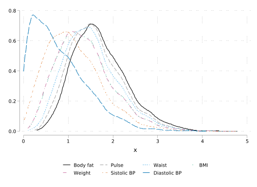
Now, finally, let’s just calculate our Romano-Wolf p-values. Here–and as laid out in the book–we simply wish to compare our original t-values with those in the null distribution in each case. If our original t-values are extreme compared to the null distribution, this results in a low p-value (and strong evidence against the null), while if our original t-values appear likely to occur when the null is true, we will have little evidence to reject the null. We calculate our p-values below, where as above, we enforce monotonocity to avoid unordered p-values in final tests:
local prev = 0
local j = 1
foreach var in `vars' {
count if abs(null_`var')>abs(`t_`var'')
local p = r(N)/`B'
//enforce monotonocity
if `p'<`prev' local p = `prev'
//save p-value
matrix pvalues[`j',4] = `p'
local prev = `p'
local ++j
} 1
1,450
1,257
1,390
1,829
1,721
4,370Now finally, we can inspect these p-values:
matlist pvalues, border(rows) rowtitle(variables) left(2) format(%06.5f) title("Original and FWER corrected p-values")
Original and FWER corrected p-values
-------------------------------------------------
variables | uncor~d Bonfe~i Holm Roman~f
-------------+-----------------------------------
bodyfat | 0.00001 0.00006 0.00006 0.00020
pulse | 0.06331 0.44315 0.37985 0.29000
waist | 0.06410 0.44867 0.37985 0.29000
bmi | 0.09710 0.67969 0.38839 0.29000
weight | 0.13170 0.92187 0.39509 0.36580
sbp | 0.19117 1.00000 0.39509 0.36580
dbp | 0.87321 1.00000 0.87321 0.87400
-------------------------------------------------Here we see that as expected, Romano-Wolf p-values are lower, and at times substantially lower, to the values from Holm. We also see that for the final test, these p-values are the same (subject to some minor bootstrap variance), as the uncorrected p-values. In general, we see here the benefits in terms of power which we may expect in this case.
Finally note, that while it is very useful to see that we can calculate such p-values by hand, there are also libraries available which implement these automatically. Below we use the rwolf2 library which automates the procedure we have conducted above, retutning to us the Romano-Wolf p-values, along with Holm and uncorrected p-values and the null distributions generated to calculate Romano-Wolf p-values. These values are essentially identical (subject to bootstrap variation) to what we calculated by hand ourselves.
cwf default
rwolf2 (reg bodyfat_diff eight, r) ///
(reg pulse_diff eight, r) ///
(reg waist_diff eight, r) ///
(reg bmi_diff eight, r) ///
(reg weight_diff eight, r) ///
(reg sbp_diff eight, r) ///
(reg dbp_diff eight, r), ///
indepvars(eight, eight, eight, eight, eight, eight, eight) ///
holm reps(`B') graph nodotsBootstrap replications (5000). This may take some time.
Romano-Wolf step-down adjusted p-values
Number of resamples: 5000
------------------------------------------------------------------------------
| Model Resample Romano-Wolf Holm
| p-value p-value p-value p-value
----------------+-------------------------------------------------------------
bodyfat_diff |
eight | 0.0000 0.0004 0.0004 0.0028
------------------------------------------------------------------------------
pulse_diff |
eight | 0.0633 0.0662 0.2891 0.3971
------------------------------------------------------------------------------
waist_diff |
eight | 0.0641 0.0668 0.2891 0.3339
------------------------------------------------------------------------------
bmi_diff |
eight | 0.0971 0.1154 0.2891 0.4615
------------------------------------------------------------------------------
weight_diff |
eight | 0.1317 0.1586 0.3513 0.4757
------------------------------------------------------------------------------
sbp_diff |
eight | 0.1912 0.1900 0.3513 0.3799
------------------------------------------------------------------------------
dbp_diff |
eight | 0.8732 0.8700 0.8700 0.8700
------------------------------------------------------------------------------
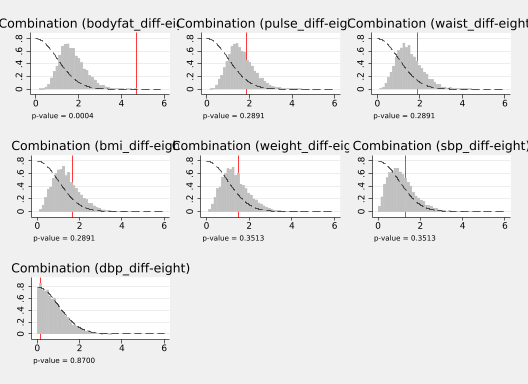
In this code call out, we will consider multiple hypothesis testing with some simulated data and use these simulations to understand why the decision of which type of index to use is not innocuous.
To begin, let’s just consider how we may explore a controlled simulation with multiple hypothesis testing. Specifically, let’s imagine that we wish to run the following regression: \[ y_i^k=\alpha + \tau^k Treat_i + \varepsilon_i^k \forall k\in\{1,\ldots,K\}. \] Here we use the super-index \(k\) to indicate that these are different outcome variables (in particular \(K\) different outcome variables), and these are regressed on a single treatment value. Let’s conduct some simulations where the true treatment effect for each of these models \(\tau^k\) is indeed 0. Let’s also simulate a treatment variable for 100 observations such that half of the population is randomly assigned treatment, and the other half is not assigned treatment. We will simulate each \(\varepsilon_i\sim\mathcal{N}(0,1)\). Then, let’s estimate the effect \(\tau^k\) in each case, and see if we reject the (true) null hypothesis that \(\tau^k=0\).
We can do this quite simply below, where we first set 100 observations and then generate a single treatment variable as treat. We will then simulate for \(K=10\) outcomes where the treatment effect is indeed 0, and run the regression of each outcome on treatment one at a time:
clear all
set seed 121316
// Consider K=10 depdendent variables
local K=10
qui set obs 100
gen treat = runiform()>0.5
foreach k of numlist 1(1)`K' {
gen y`k' = 2 + 0*treat + rnormal()
qui reg y`k' treat
dis "p-value of test `k' is: " normal(abs(_b[treat]/_se[treat]))
}p-value of test 1 is: .60163144
p-value of test 2 is: .80277292
p-value of test 3 is: .60295039
p-value of test 4 is: .92826589
p-value of test 5 is: .63600241
p-value of test 6 is: .68699414
p-value of test 7 is: .50859103
p-value of test 8 is: .58320441
p-value of test 9 is: .658999
p-value of test 10 is: .71651237In this particular example, we can see that of these 10 simulated outcomes where the treatment has no effect on each outcome \(y^k\), we correctly fail to reject the null hypothesis that the effect is 0 based on the 10 p-values resulting from the regression above if a critical value of \(\alpha=0.05\) is used. Of course, this is entirely dependent upon the particular simulation which we define with the random seed using in set seed. For this reason, to see the concerns about multiple testing more generally, we will repeat this process 5000 times, observing in each of the 5000 cases whether we (falsely) reject at least one hypothesis within our \(K\) hypotheses, or falsely reject at least two hypotheses within our \(K\) tests.
We do this below, where we have essentially replicated the above block of code, but we now repeat the test \(S=5000\) times and in each case we determine whether any hypotheses are rejected, saving these in a series of local variables. Finally, we can
clear all
set seed 1213
local S = 5000
local K = 10
**Consider up to K=10 depdendent variables (Table on slide 2)
local reject`K' = 0
local prop`K' = 0
local prop2`K' = 0
// For a given number of variables K, run the simulation S times
forvalues s = 1/`S' {
qui set obs 100
gen treat = runiform()>0.5
local rejectAny = 0
foreach k of numlist 1(1)`K' {
gen y`k' = 2 + 0*treat + rnormal()
qui reg y`k' treat
if abs(_b[treat]/_se[treat])>invnormal(0.975) {
local ++reject`K'
local ++rejectAny
}
}
// dis "Reject any is `rejectAny'"
if `rejectAny'>0 local ++prop`K'
if `rejectAny'>1 local ++prop2`K'
clear
}
// Calculate key proportions
local mtr = string(`reject`K''/(`K'*`S'), "%04.3f")
local ptr = string(`prop`K''/`S', "%04.3f")
local p2r = string(`prop2`K''/`S', "%04.3f")
// Display results of tests
dis "Total Tests Rejected: `reject`K''"
dis "Mean Tests Rejected: `mtr'"
dis "Proprtion 1 or more rejections: `ptr'"
dis "Proprtion 2 or more rejections: `p2r'"Total Tests Rejected: 2660
Mean Tests Rejected: 0.053
Proprtion 1 or more rejections: 0.419
Proprtion 2 or more rejections: 0.097In this case, we see that (as expected), while only 5% of all hypotheses are rejected (or, to be exact, 5.3%), when we consider the number of times that at least 1 hypothesis is rejected, this is much higher, at 41.8%. What’s more, if we consider cases with at least 2 rejections, we see that this is also far higher that 5%, at around 9.4%.
Of course, the degree to which such overrejections occurs will depende upon the number of false null hypotheses considered. Below we can see this where we simply replicate the above analysis, however here instead of doing this just for \(K=10\) variables, we do it for a range of values. This simply adds an outer loop around the procedure above, considering \(K=1, 2, \ldots, 20\) variables within a family of tests, where in each case there is no effect of treatment on any of the variables considered.
clear all
set seed 1213
local S = 5000
set obs 20
gen numvars = .
gen propreject = .
gen prejectAny = .
//Loop through, varying the number of total outcomes (K below) from 1-20
foreach K of numlist 1(1)20 {
preserve
clear
local reject`K' = 0
local prop`K' = 0
// For a given number of variables K, run the simulation S times
forvalues s = 1/`S' {
qui set obs 100
gen treat = runiform()>0.5
local rejectAny = 0
foreach k of numlist 1(1)`K' {
gen y`k' = 2 + 0*treat + rnormal()
qui reg y`k' treat
if abs(_b[treat]/_se[treat])>invnormal(0.975) {
local ++reject`K'
local ++rejectAny
}
}
// dis "Reject any is `rejectAny'"
if `rejectAny'>0 local ++prop`K'
clear
}
restore
qui replace numvars = `K' in `K'
qui replace propreject = `reject`K''/(`K'*`S') in `K'
qui replace prejectAny = `prop`K''/`S' in `K'
}Number of observations (_N) was 0, now 20.
(20 missing values generated)
(20 missing values generated)
(20 missing values generated)Finally, to view the output, we can simply plot the rate of rejections of all hypotheses considered by the number of hypotheses tested, as well as the proportion of times that at least 1 hypothesis is rejected. We do this in the graph below:
twoway connected propreject numvars ///
|| connected prejectAny numvars, ///
ytitle("Proportion rejected hypotheses") ///
xtitle("Number of variables in class") ///
scheme(stcolor) ylabel(, format(%03.1f)) ///
legend(order(1 "Proportion of all hypotheses" ///
2 "Proportion at least 1 rejection") pos(6))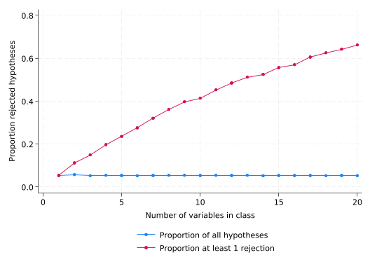
As expected, we can see that while the proportion of all rejected hypotheses is stable at around 5%, the number of times at least 1 hypothesis is rejected accumulates as the number of hypotheses tested grows, reaching very high levels (around 65%) when 20 hypotheses are in a class.
As laid out in the book, there are multiple ways to deal with this. One way is to seek to reduce the number of outcomes (and hence hypotheses) to a single aggregate measure. We will explore this here. If all variables are indeed entirely independent as in the simulations above, the way an index is formed is a relatively innocuous choice. However, when variables are correlated among themselves, as is likely the case in real empirical settings, we will see here that the choice of indexes is very much not innocuous. In order to explore this below, we will set up some simulations where unobserved errors corresponding to each outcome of interest are correlated among themselves. Specifically, we will seek to simulate a series of variables which depend upon unobservables drawn from a multivariate normal distribution such that: \((\varepsilon_i^1, \varepsilon_i^2, \ldots \varepsilon_i^K)\sim\mathcal{N}([0,0,\ldots,0], \Omega)\), where \(\Omega\) is a correlation matrix: \[ \Omega = \begin{bmatrix} 1 & \rho & \ldots & \rho \\ \rho & 1 & \ldots & \rho \\ \vdots & \vdots & \ddots & \vdots \\ \rho & \rho & \ldots & 1 \\ \end{bmatrix} \] Thus, if \(\rho=0\) unobserved error terms will be completely independent, while if \(0<\rho\leq 1\), variables will be positively correlated. We will then simulate a single treatment variable \(Treat_i\) which takes 1 for around half of the observations and 0 for all others, and finally, simulate the outcomes themselves as: \[ y_i^k = \tau^k Treat_i + \varepsilon^k_i \]
Below we will set up such a simulation based on 1,000 observations. In this simulation we will consider \(K=10\) strongly correlated variables (setting \(\rho=0.9\)), and additionally simulate one variable which is entirely uncorrelated with other variables. For 9 of the 10 uncorrelated variables we will set \(\tau^{k}=0\), while for the tenth variable, as well as the uncorrelated variable, we will set \(\tau=0.5\):
set seed 1213
set obs 1000
local r = 0.9
#delimit ;
mat corr =
(1,`r',`r',`r',`r',`r',`r',`r',`r',`r' \
`r',1,`r',`r',`r',`r',`r',`r',`r',`r' \
`r',`r',1,`r',`r',`r',`r',`r',`r',`r' \
`r',`r',`r',1,`r',`r',`r',`r',`r',`r' \
`r',`r',`r',`r',1,`r',`r',`r',`r',`r' \
`r',`r',`r',`r',`r',1,`r',`r',`r',`r' \
`r',`r',`r',`r',`r',`r',1,`r',`r',`r' \
`r',`r',`r',`r',`r',`r',`r',1,`r',`r' \
`r',`r',`r',`r',`r',`r',`r',`r',1,`r' \
`r',`r',`r',`r',`r',`r',`r',`r',`r',1 );
#delimit cr
drawnorm u1 u2 u3 u4 u5 u6 u7 u8 u9 u10, corr(corr)
gen Treat = runiform()>0.5
foreach num of numlist 1(1)9 {
gen y`num' = 0*Treat + u`num'
}
gen y10 = 0.5*Treat + u10
gen y11 = 0.5*Treat + rnormal()Number of observations (_N) was 20, now 1,000.Now with these variables in hand, let’s consider three of the potential indexes discussed in the book. This is Anderson’s index which overweights variables which bring independent variation, a principal-components based index, and a simple summary index. We generate these below, in the case of Anderson (2008) using the user-written swindex command. Finally, we examine whether we detect any effect of treatment on each of the aggregate indexes using a simple OLS regression.
// Generate Anderson's Index
gen control = Treat==0
swindex y1 y2 y3 y4 y5 y6 y7 y8 y9 y10, normby(control) generate(AndersonIndex)
// Generate Principal component
pca y1 y2 y3 y4 y5 y6 y7 y8 y9 y10
predict PCIndex, score
// Generate summary index
egen SumIndex = rowtotal(y1 y2 y3 y4 y5 y6 y7 y8 y9 y10)
reg AndersonIndex Treat, robust
reg SumIndex Treat, robust
reg PCIndex Treat, robust
Principal components/correlation Number of obs = 1,000
Number of comp. = 10
Trace = 10
Rotation: (unrotated = principal) Rho = 1.0000
--------------------------------------------------------------------------
Component | Eigenvalue Difference Proportion Cumulative
-------------+------------------------------------------------------------
Comp1 | 9.07953 8.93858 0.9080 0.9080
Comp2 | .14095 .0269087 0.0141 0.9220
Comp3 | .114041 .00778744 0.0114 0.9335
Comp4 | .106254 .00389338 0.0106 0.9441
Comp5 | .10236 .00112654 0.0102 0.9543
Comp6 | .101234 .00284739 0.0101 0.9644
Comp7 | .0983865 .00813112 0.0098 0.9743
Comp8 | .0902554 .00523443 0.0090 0.9833
Comp9 | .085021 .00305454 0.0085 0.9918
Comp10 | .0819665 . 0.0082 1.0000
--------------------------------------------------------------------------
Principal components (eigenvectors)
--------------------------------------------------------------------------
Variable | Comp1 Comp2 Comp3 Comp4 Comp5 Comp6
-------------+------------------------------------------------------------
y1 | 0.3169 -0.0816 -0.1057 0.6319 -0.2236 -0.2755
y2 | 0.3184 -0.1099 -0.0061 -0.0425 0.2271 -0.3798
y3 | 0.3175 -0.1865 0.0551 0.3122 -0.2986 0.1167
y4 | 0.3166 0.0062 -0.2173 -0.2551 -0.5168 0.5535
y5 | 0.3172 -0.0135 -0.1075 -0.5689 0.0394 -0.3621
y6 | 0.3164 -0.2424 0.1829 -0.2882 -0.0451 0.1014
y7 | 0.3163 -0.1081 0.1627 0.1580 0.6910 0.5235
y8 | 0.3162 -0.0018 -0.7094 0.0410 0.2256 -0.0760
y9 | 0.3163 -0.1646 0.5787 -0.0324 -0.1010 -0.1966
y10 | 0.3104 0.9213 0.1702 0.0446 0.0025 -0.0023
--------------------------------------------------------------------------
--------------------------------------------------------------------
Variable | Comp7 Comp8 Comp9 Comp10 | Unexplained
-------------+----------------------------------------+-------------
y1 | -0.0464 0.2944 -0.4733 -0.2090 | 0
y2 | 0.0574 -0.3090 0.3860 -0.6642 | 0
y3 | 0.2601 -0.6542 0.1181 0.3892 | 0
y4 | -0.3087 0.0279 0.0393 -0.3411 | 0
y5 | -0.1513 -0.2508 -0.5551 0.1932 | 0
y6 | 0.7304 0.4226 -0.0152 -0.0071 | 0
y7 | -0.1479 -0.0669 -0.2413 -0.0270 | 0
y8 | -0.0574 0.2580 0.3678 0.3651 | 0
y9 | -0.4787 0.2766 0.3277 0.2739 | 0
y10 | 0.1444 0.0061 0.0466 0.0307 | 0
--------------------------------------------------------------------
(9 components skipped)
Scoring coefficients
sum of squares(column-loading) = 1
--------------------------------------------------------------------------
Variable | Comp1 Comp2 Comp3 Comp4 Comp5 Comp6
-------------+------------------------------------------------------------
y1 | 0.3169 -0.0816 -0.1057 0.6319 -0.2236 -0.2755
y2 | 0.3184 -0.1099 -0.0061 -0.0425 0.2271 -0.3798
y3 | 0.3175 -0.1865 0.0551 0.3122 -0.2986 0.1167
y4 | 0.3166 0.0062 -0.2173 -0.2551 -0.5168 0.5535
y5 | 0.3172 -0.0135 -0.1075 -0.5689 0.0394 -0.3621
y6 | 0.3164 -0.2424 0.1829 -0.2882 -0.0451 0.1014
y7 | 0.3163 -0.1081 0.1627 0.1580 0.6910 0.5235
y8 | 0.3162 -0.0018 -0.7094 0.0410 0.2256 -0.0760
y9 | 0.3163 -0.1646 0.5787 -0.0324 -0.1010 -0.1966
y10 | 0.3104 0.9213 0.1702 0.0446 0.0025 -0.0023
--------------------------------------------------------------------------
------------------------------------------------------
Variable | Comp7 Comp8 Comp9 Comp10
-------------+----------------------------------------
y1 | -0.0464 0.2944 -0.4733 -0.2090
y2 | 0.0574 -0.3090 0.3860 -0.6642
y3 | 0.2601 -0.6542 0.1181 0.3892
y4 | -0.3087 0.0279 0.0393 -0.3411
y5 | -0.1513 -0.2508 -0.5551 0.1932
y6 | 0.7304 0.4226 -0.0152 -0.0071
y7 | -0.1479 -0.0669 -0.2413 -0.0270
y8 | -0.0574 0.2580 0.3678 0.3651
y9 | -0.4787 0.2766 0.3277 0.2739
y10 | 0.1444 0.0061 0.0466 0.0307
------------------------------------------------------
Linear regression Number of obs = 1,000
F(1, 998) = 0.54
Prob > F = 0.4629
R-squared = 0.0005
Root MSE = 1.0189
------------------------------------------------------------------------------
| Robust
AndersonIn~x | Coefficient std. err. t P>|t| [95% conf. interval]
-------------+----------------------------------------------------------------
Treat | .0473065 .0644126 0.73 0.463 -.0790931 .1737061
_cons | 2.08e-17 .0450827 0.00 1.000 -.0884679 .0884679
------------------------------------------------------------------------------
Linear regression Number of obs = 1,000
F(1, 998) = 3.39
Prob > F = 0.0661
R-squared = 0.0034
Root MSE = 9.5804
------------------------------------------------------------------------------
| Robust
SumIndex | Coefficient std. err. t P>|t| [95% conf. interval]
-------------+----------------------------------------------------------------
Treat | 1.114093 .6055264 1.84 0.066 -.0741575 2.302344
_cons | .0368976 .4211652 0.09 0.930 -.7895733 .8633685
------------------------------------------------------------------------------
Linear regression Number of obs = 1,000
F(1, 998) = 3.24
Prob > F = 0.0721
R-squared = 0.0032
Root MSE = 3.0099
------------------------------------------------------------------------------
| Robust
PCIndex | Coefficient std. err. t P>|t| [95% conf. interval]
-------------+----------------------------------------------------------------
Treat | .3424863 .1902373 1.80 0.072 -.0308247 .7157973
_cons | -.173983 .1323211 -1.31 0.189 -.4336425 .0856764
------------------------------------------------------------------------------In this case, where there is a single true effect, we observe that if we consult the summary index or the principal components index we find some evidence of significant effect of treatment on aggregate outcomes. However, if we consult the Anderson index we observe very little evidence of a significant effect. However, below we consider precisely the same setting, but now instead of examining an index based on the 10 correlated variables (with one true effect), we consider 9 correlated variables (with no effects), and 1 uncorrelated variable with a true effect.
// Generate Anderson's Index
swindex y1 y2 y3 y4 y5 y6 y7 y8 y9 y11, normby(control) generate(AndersonIndex2)
// Generate Principal component
pca y1 y2 y3 y4 y5 y6 y7 y8 y9 y11
predict PCIndex2, score
// Generate summary index
egen SumIndex2 = rowtotal(y1 y2 y3 y4 y5 y6 y7 y8 y9 y11)
reg AndersonIndex2 Treat
reg SumIndex2 Treat
reg PCIndex2 Treat
Principal components/correlation Number of obs = 1,000
Number of comp. = 10
Trace = 10
Rotation: (unrotated = principal) Rho = 1.0000
--------------------------------------------------------------------------
Component | Eigenvalue Difference Proportion Cumulative
-------------+------------------------------------------------------------
Comp1 | 8.21971 7.22012 0.8220 0.8220
Comp2 | .999585 .884657 0.1000 0.9219
Comp3 | .114928 .00895351 0.0115 0.9334
Comp4 | .105974 .00369227 0.0106 0.9440
Comp5 | .102282 .00143581 0.0102 0.9542
Comp6 | .100846 .00153902 0.0101 0.9643
Comp7 | .099307 .00907907 0.0099 0.9743
Comp8 | .0902279 .00508473 0.0090 0.9833
Comp9 | .0851432 .00314239 0.0085 0.9918
Comp10 | .0820008 . 0.0082 1.0000
--------------------------------------------------------------------------
Principal components (eigenvectors)
--------------------------------------------------------------------------
Variable | Comp1 Comp2 Comp3 Comp4 Comp5 Comp6
-------------+------------------------------------------------------------
y1 | 0.3333 0.0094 0.0879 -0.6245 0.2354 -0.2887
y2 | 0.3349 0.0026 -0.0129 0.0711 -0.1720 -0.4071
y3 | 0.3341 0.0023 -0.1085 -0.3464 0.2661 0.1268
y4 | 0.3329 -0.0288 0.2266 0.1963 0.4471 0.6469
y5 | 0.3335 -0.0067 0.1248 0.5995 0.0361 -0.3096
y6 | 0.3330 -0.0147 -0.2580 0.2391 0.0294 0.0862
y7 | 0.3327 -0.0021 -0.1740 -0.1541 -0.7609 0.4177
y8 | 0.3325 -0.0046 0.6936 -0.0436 -0.2140 -0.1067
y9 | 0.3327 0.0017 -0.5792 0.0623 0.1317 -0.1635
y11 | 0.0136 0.9994 0.0069 0.0190 0.0084 0.0220
--------------------------------------------------------------------------
--------------------------------------------------------------------
Variable | Comp7 Comp8 Comp9 Comp10 | Unexplained
-------------+----------------------------------------+-------------
y1 | -0.0772 0.2873 -0.4766 0.1914 | 0
y2 | 0.0546 -0.3151 0.3704 0.6692 | 0
y3 | 0.2774 -0.6527 0.1280 -0.3878 | 0
y4 | -0.2487 0.0382 0.0451 0.3388 | 0
y5 | -0.1353 -0.2489 -0.5386 -0.2152 | 0
y6 | 0.7594 0.4233 -0.0274 0.0156 | 0
y7 | -0.1464 -0.0663 -0.2360 0.0164 | 0
y8 | 0.0000 0.2607 0.3888 -0.3608 | 0
y9 | -0.4857 0.2778 0.3457 -0.2708 | 0
y11 | 0.0036 0.0059 0.0012 0.0048 | 0
--------------------------------------------------------------------
(9 components skipped)
Scoring coefficients
sum of squares(column-loading) = 1
--------------------------------------------------------------------------
Variable | Comp1 Comp2 Comp3 Comp4 Comp5 Comp6
-------------+------------------------------------------------------------
y1 | 0.3333 0.0094 0.0879 -0.6245 0.2354 -0.2887
y2 | 0.3349 0.0026 -0.0129 0.0711 -0.1720 -0.4071
y3 | 0.3341 0.0023 -0.1085 -0.3464 0.2661 0.1268
y4 | 0.3329 -0.0288 0.2266 0.1963 0.4471 0.6469
y5 | 0.3335 -0.0067 0.1248 0.5995 0.0361 -0.3096
y6 | 0.3330 -0.0147 -0.2580 0.2391 0.0294 0.0862
y7 | 0.3327 -0.0021 -0.1740 -0.1541 -0.7609 0.4177
y8 | 0.3325 -0.0046 0.6936 -0.0436 -0.2140 -0.1067
y9 | 0.3327 0.0017 -0.5792 0.0623 0.1317 -0.1635
y11 | 0.0136 0.9994 0.0069 0.0190 0.0084 0.0220
--------------------------------------------------------------------------
------------------------------------------------------
Variable | Comp7 Comp8 Comp9 Comp10
-------------+----------------------------------------
y1 | -0.0772 0.2873 -0.4766 0.1914
y2 | 0.0546 -0.3151 0.3704 0.6692
y3 | 0.2774 -0.6527 0.1280 -0.3878
y4 | -0.2487 0.0382 0.0451 0.3388
y5 | -0.1353 -0.2489 -0.5386 -0.2152
y6 | 0.7594 0.4233 -0.0274 0.0156
y7 | -0.1464 -0.0663 -0.2360 0.0164
y8 | 0.0000 0.2607 0.3888 -0.3608
y9 | -0.4857 0.2778 0.3457 -0.2708
y11 | 0.0036 0.0059 0.0012 0.0048
------------------------------------------------------
Source | SS df MS Number of obs = 1,000
-------------+---------------------------------- F(1, 998) = 32.73
Model | 32.1189456 1 32.1189456 Prob > F = 0.0000
Residual | 979.412278 998 .981375029 R-squared = 0.0318
-------------+---------------------------------- Adj R-squared = 0.0308
Total | 1011.53122 999 1.01254377 Root MSE = .99064
------------------------------------------------------------------------------
AndersonIn~2 | Coefficient Std. err. t P>|t| [95% conf. interval]
-------------+----------------------------------------------------------------
Treat | .3584811 .0626618 5.72 0.000 .235517 .4814451
_cons | -1.11e-16 .0446617 -0.00 1.000 -.0876416 .0876416
------------------------------------------------------------------------------
Source | SS df MS Number of obs = 1,000
-------------+---------------------------------- F(1, 998) = 3.53
Model | 267.955401 1 267.955401 Prob > F = 0.0606
Residual | 75791.0001 998 75.9428859 R-squared = 0.0035
-------------+---------------------------------- Adj R-squared = 0.0025
Total | 76058.9555 999 76.1350906 Root MSE = 8.7145
------------------------------------------------------------------------------
SumIndex2 | Coefficient Std. err. t P>|t| [95% conf. interval]
-------------+----------------------------------------------------------------
Treat | 1.035421 .5512253 1.88 0.061 -.0462729 2.117114
_cons | .0847402 .392881 0.22 0.829 -.6862274 .8557077
------------------------------------------------------------------------------
Source | SS df MS Number of obs = 1,000
-------------+---------------------------------- F(1, 998) = 1.12
Model | 9.23822552 1 9.23822552 Prob > F = 0.2893
Residual | 8202.24905 998 8.21868642 R-squared = 0.0011
-------------+---------------------------------- Adj R-squared = 0.0001
Total | 8211.48727 999 8.21970698 Root MSE = 2.8668
------------------------------------------------------------------------------
PCIndex2 | Coefficient Std. err. t P>|t| [95% conf. interval]
-------------+----------------------------------------------------------------
Treat | .192256 .1813372 1.06 0.289 -.1635899 .5481018
_cons | -.097666 .1292465 -0.76 0.450 -.351292 .15596
------------------------------------------------------------------------------In this case we see that our conclusion is very different. Now the Anderson index strongly suggests some statistically significant treatment effect, while the principal components based index suggests little evidence of a statistically significant effect. Of course this should not surprise us if we consider what the indexes do “under the hood”: Anderson’s index overweights variables which bring independent variation, while principal components seeks to pick up underlying signals, and hence will downweight variables if they are quite unrelated to others within the class.
To see that this is not a statisical curio with this specific simulation, below we can generalise this, running \(S=100\) simulations. In each simulation we will consider these three types of indexes: the Anderson index, principal components, and a summary index. We will also consider 4 specific cases. A first case where there are no significant treatment effects for any of the variables, a second case where there is one significant treatment effect from a correlated variable, a third case where there is one significant treatment effect from an uncorrelated variable, and a fourth case where there is a significant treatment effect on all of the 10 variables considered. We will then examine the distribution of t-statistics from each of the simulations and each of the index types. We set up these simulations below:
clear all
local S = 100
set obs `S'
//Generate empty variables to hold t-statistics from each simulation
foreach index in Anderson PC Sum {
gen `index'A_t = .
gen `index'B_t = .
gen `index'C_t = .
gen `index'D_t = .
}
// Run S simulation testing for real impacts depending on correlational structure
forvalues s=1/`S' {
preserve
clear
qui set obs 1000
local r = 0.9
#delimit ;
mat corr =
(1,`r',`r',`r',`r',`r',`r',`r',`r',`r' \
`r',1,`r',`r',`r',`r',`r',`r',`r',`r' \
`r',`r',1,`r',`r',`r',`r',`r',`r',`r' \
`r',`r',`r',1,`r',`r',`r',`r',`r',`r' \
`r',`r',`r',`r',1,`r',`r',`r',`r',`r' \
`r',`r',`r',`r',`r',1,`r',`r',`r',`r' \
`r',`r',`r',`r',`r',`r',1,`r',`r',`r' \
`r',`r',`r',`r',`r',`r',`r',1,`r',`r' \
`r',`r',`r',`r',`r',`r',`r',`r',1,`r' \
`r',`r',`r',`r',`r',`r',`r',`r',`r',1 );
#delimit cr
drawnorm u1 u2 u3 u4 u5 u6 u7 u8 u9 u10, corr(corr)
gen treat = runiform()<0.5
// generate outcome variables: y`num' is null effect, yr`num' is non-null effect
foreach num of numlist 1(1)10 {
gen y`num' = 1 + 0*treat + u`num'
gen yr`num' = 1 + 0.5*treat + u`num'
}
gen yr11 = 1+0.5*treat + rnormal()
gen control = treat==0
**Anderson Index
swindex y1 y2 y3 y4 y5 y6 y7 y8 y9 y10, normby(control) generate(AndersonIndexA)
swindex y1 y2 y3 y4 y5 y6 y7 y8 y9 yr10, normby(control) generate(AndersonIndexB)
swindex y1 y2 y3 y4 y5 y6 y7 y8 y9 yr11, normby(control) generate(AndersonIndexC)
swindex yr1 yr2 yr3 yr4 yr5 yr6 yr7 yr8 yr9 yr10, normby(control) generate(AndersonIndexD)
**1st Principal Component
qui pca y1 y2 y3 y4 y5 y6 y7 y8 y9 y10
qui predict PCIndexA, score
qui pca y1 y2 y3 y4 y5 y6 y7 y8 y9 yr10
qui predict PCIndexB, score
qui pca y1 y2 y3 y4 y5 y6 y7 y8 y9 yr11
qui predict PCIndexC, score
qui pca yr1 yr2 yr3 yr4 yr5 yr6 yr7 yr8 yr9 yr10
qui predict PCIndexD, score
**Summary Index
egen SumIndexA = rowtotal(y1 y2 y3 y4 y5 y6 y7 y8 y9 y10 )
egen SumIndexB = rowtotal(y1 y2 y3 y4 y5 y6 y7 y8 y9 yr10)
egen SumIndexC = rowtotal(y1 y2 y3 y4 y5 y6 y7 y8 y9 yr11)
egen SumIndexD = rowtotal(yr1 yr2 yr3 yr4 yr5 yr6 yr7 yr8 yr9 yr10)
foreach index in Anderson PC Sum {
qui reg `index'IndexA treat
local `index'IA = _b[treat]/_se[treat]
qui reg `index'IndexB treat
local `index'IB = _b[treat]/_se[treat]
qui reg `index'IndexC treat
local `index'IC = _b[treat]/_se[treat]
qui reg `index'IndexD treat
local `index'ID = _b[treat]/_se[treat]
}
restore
foreach index in Anderson PC Sum {
qui replace `index'A_t = ``index'IA' in `s'
qui replace `index'B_t = ``index'IB' in `s'
qui replace `index'C_t = ``index'IC' in `s'
qui replace `index'D_t = ``index'ID' in `s'
}
}Number of observations (_N) was 0, now 100.
(100 missing values generated)
(100 missing values generated)
(100 missing values generated)
(100 missing values generated)
(100 missing values generated)
(100 missing values generated)
(100 missing values generated)
(100 missing values generated)
(100 missing values generated)
(100 missing values generated)
(100 missing values generated)
(100 missing values generated)This results in a series of variables which contain the t-statistics of resulting tests, and we can plot these to see how each index performs. We do this below, starting with the Anderson Index:
// Set standard graphing options
local hopts xtitle("{it:t}-statistic") ylabel(, format(%3.1f))
local fopts range(-3 3) lcolor(red) lpattern(solid) legend(off) xlabel(-3(1)11)
// Generate graphs
twoway hist AndersonA_t, `hopts' ///
|| function y=normalden(x), `fopts'
twoway hist AndersonB_t, `hopts' ///
|| function y=normalden(x), `fopts'
twoway hist AndersonC_t, `hopts' ///
|| function y=normalden(x), `fopts'
twoway hist AndersonD_t, `hopts' ///
|| function y=normalden(x), `fopts'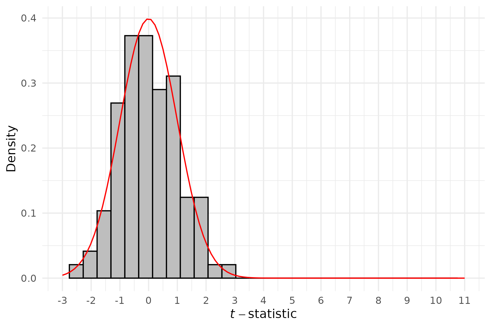
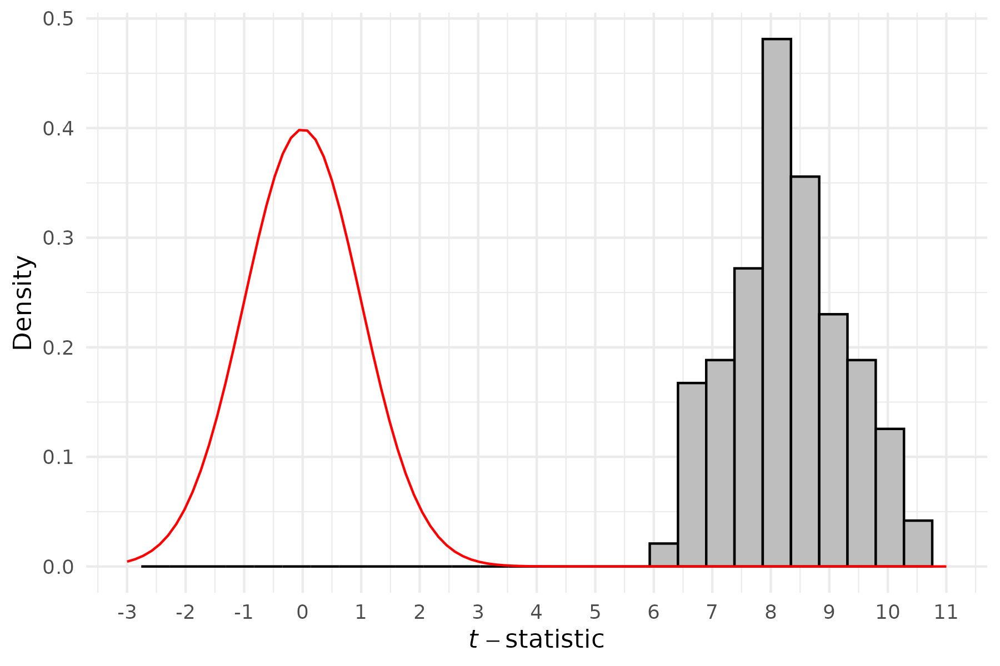
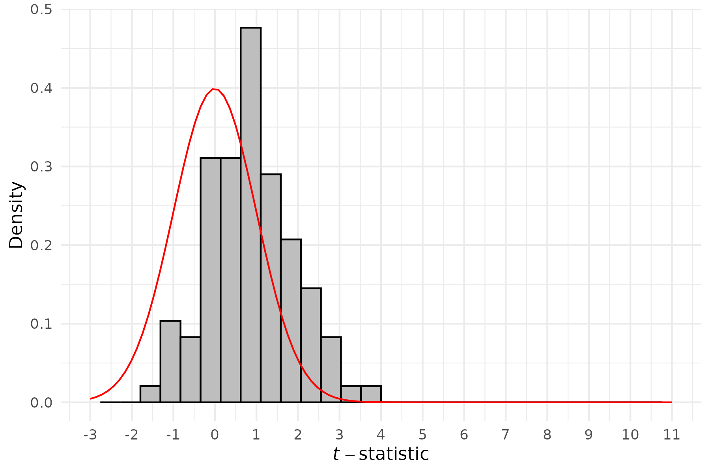
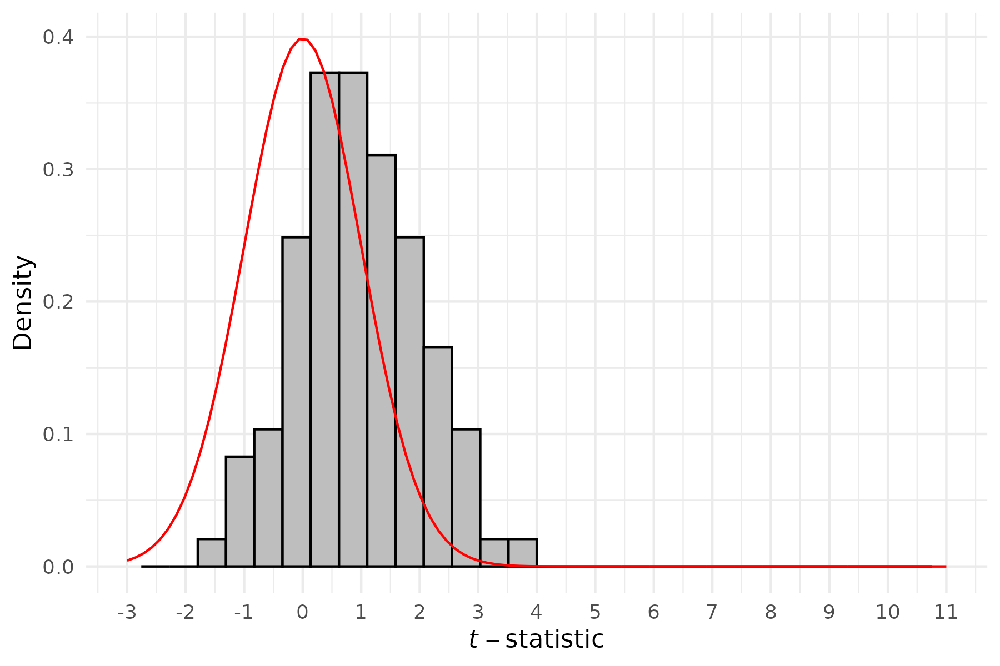
In this case we see that – as we may hope – the distribution of t-statistics we observe in panel (a), based on pure null effects, lines up nearly perfectly with a normal distribution centred around 0 (ie consistent with zero effects). This is clearly different in panel (b) where all non-zero effects are considered, with t-statistics based on an Anderson Index all suggestive of non-zero effects. Panel (c), based on a single true effect which is highly correlated with all zero effects suggests relatively little evidence to reject null hypotheses of zero effects. However, panel (d), which is based on the same structure as panel (c) but now with an uncorrelated effect shows clear evidence against the null of zero effects.
Below we compare this to the case where we consider a principal components analysis. We build identical graphs based on principal components instead of the Anderson Index:
// Generate graphs for principal components
twoway hist PCA_t, `hopts' ///
|| function y=normalden(x), `fopts'
twoway hist PCB_t, `hopts' ///
|| function y=normalden(x), `fopts'
twoway hist PCC_t, `hopts' ///
|| function y=normalden(x), `fopts'
twoway hist PCD_t, `hopts' ///
|| function y=normalden(x), `fopts'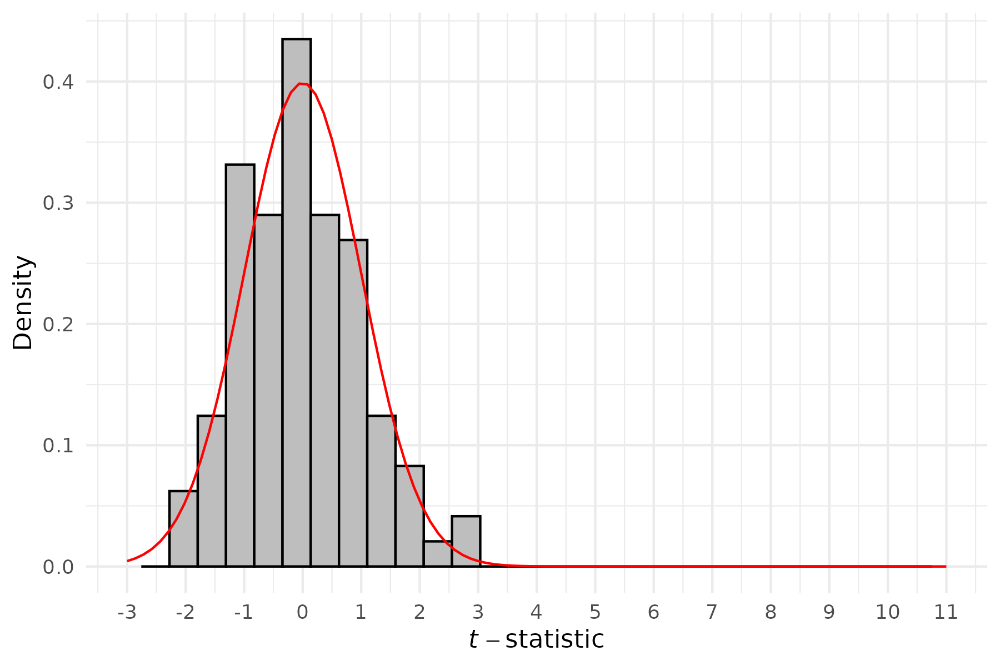
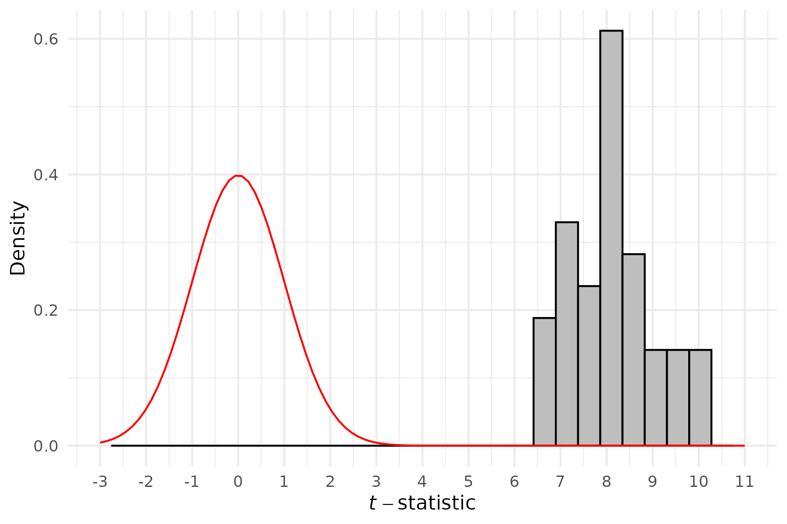
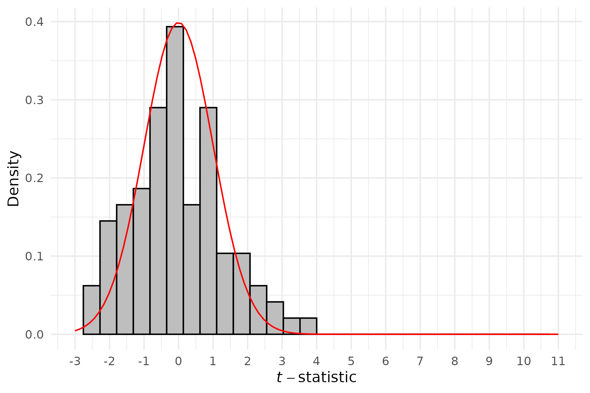
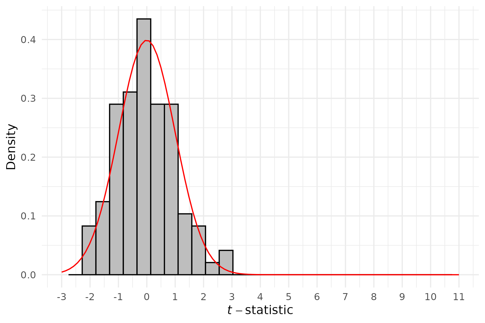
Now we see quite different patterns in panel (c) and (d). While panels (a) and (b) are virtually identical, in cases where only certain effects are observed, our conclusions appear to be quite different. While there is some evidence that t-statistics are slightly shifted in the case of a single correlated effect, we see no evidence at all to reject the null where our single effect is independent of other variables, as documented in panel (d).
If we consider the simply summary index we observe a case between the Anderson Index and the Principal Components index. In this case the t-statistics in both panels (c) and (d) appear to be slightly shifted, though this is not as extreme as the cases above which (respectively) mechanically give more weight to the uncorrelated non-zero effect and correlated non-zero effect.
// Generate graphs for summary index
twoway hist SumA_t, `hopts' ///
|| function y=normalden(x), `fopts'
twoway hist SumB_t, `hopts' ///
|| function y=normalden(x), `fopts'
twoway hist SumC_t, `hopts' ///
|| function y=normalden(x), `fopts'
twoway hist SumD_t, `hopts' ///
|| function y=normalden(x), `fopts'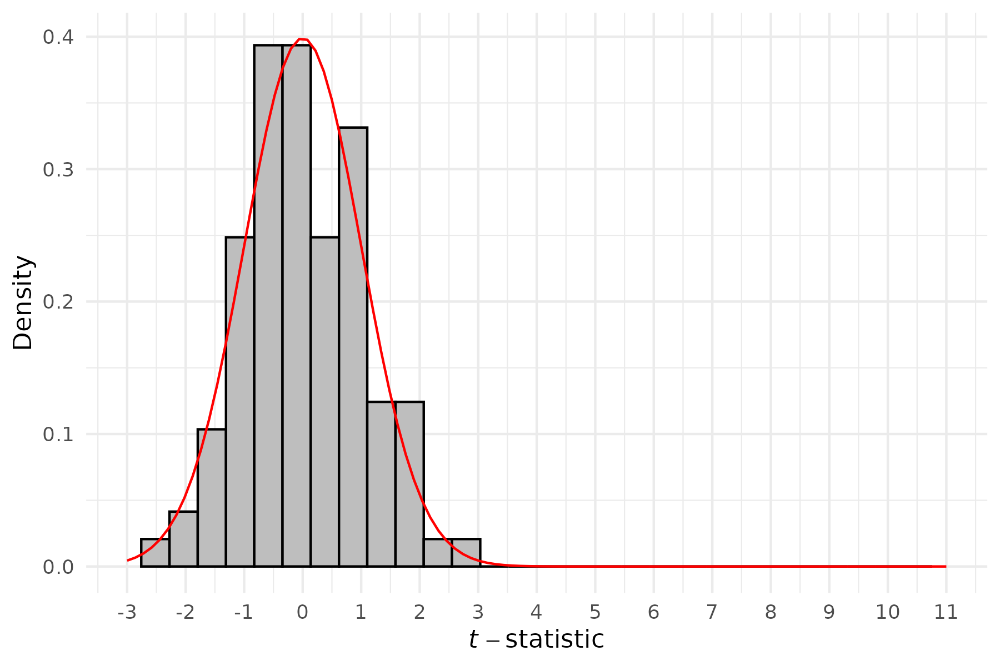
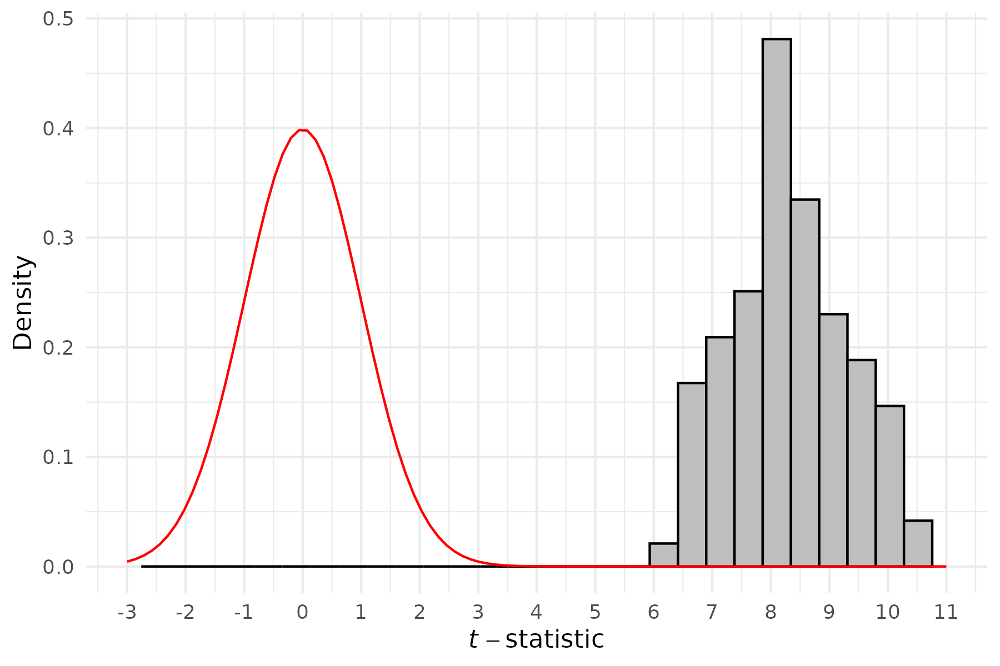
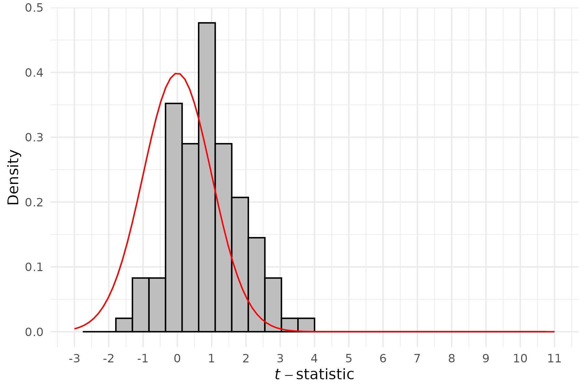
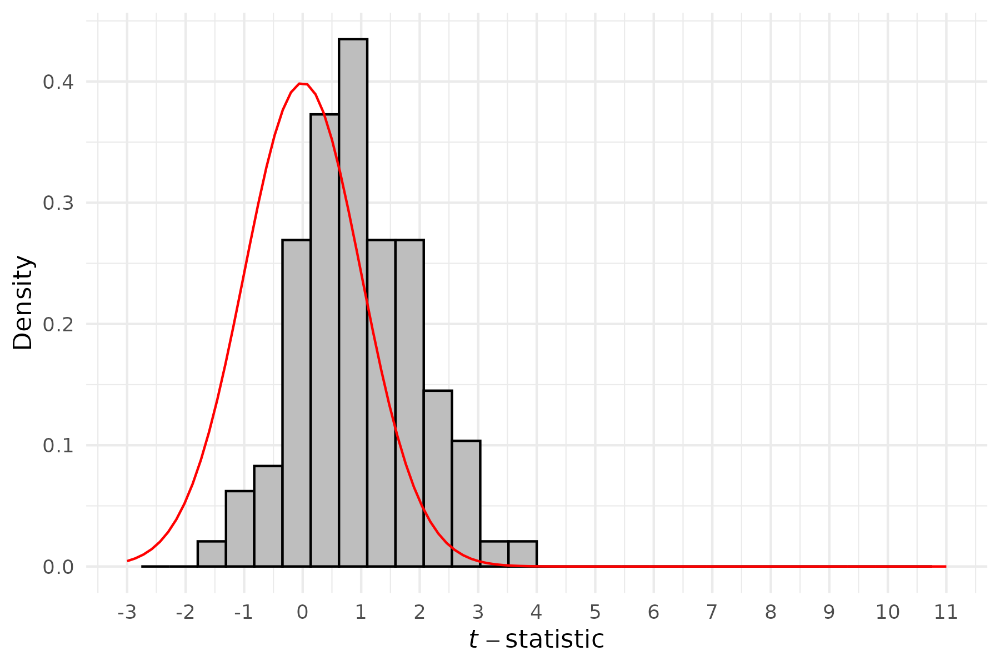
These patterns illustrate the importance of considering what type of index should be used if seeking to reduce multiple hypothesis tests to a single dimension. These are of course extreme cases based on a single non-zero effect among a class of outcomes (or cases where all or no significant treatment effects exist). You may wish to further explore these simulations by varying correlation structures, the number of significant effects, effect sizes and so forth. What is clear even from these simple structures however is that the choice of indexes is not innocuous, and we should take into account the nature of the effects being tested, whether we believe it is correct to overweight certain types of variables in our analysis, and where variation in effects comes from when determining how to aggregate underlying variables.